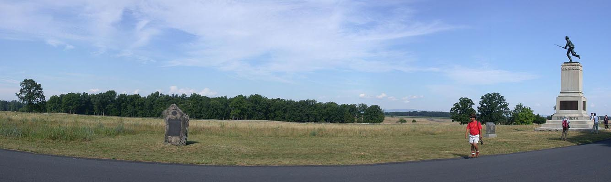

Day Three with Prof. Gary Gallagher
/ NK010728065021_685
7/28/2001

90th Penn. monument
88th Penn.
1st Minnesota monument
Looking west from the Cemetery Ridge
position of the 1st Minnesota. Brig. Gen. Cadmus Wilcox's Alabamians
would have emerged where the woods are now (the area was open
at the time.)